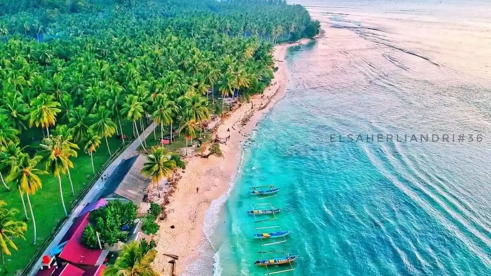

Pantai Pengubaian mendapat julukan sebagai "Bali-nya Kabupaten Kaur". Pantai ini menyajikan pasir putih, laut biru, dan batu karang dengan suasana yang tenang.
Lokasi: Desa Pengubaian, Kecamatan Kaur Selatan, Kabupaten Kaur, Bengkulu.
Tempat yang pas untuk bersantai, bermain air, menikmati panorama alam, dan berfoto.